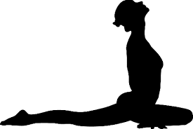
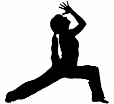

KARMA YOGA

Commonly preferred by those with an active nature, Karma Yoga is the path of skillful action, where one acts selflessly without expectation or desire of fruits or rewards. Through the teachings of this Yoga, a person can learn the art of detachment, dedicating and devoting his actions to the Divine, and therefore eliminating the accumulation of karma. Karma, according to yogic lore, is what ultimately keeps us from uniting with the Divine.
JNANA YOGA

This is perhaps the most difficult path for a modern aspirant as it requires a high degree of intellectual interest and mental power. This path encourages the practitioner to use his own mind to discover the true nature of his mind. It can dissolve the veil of ignorance through knowledge itself, primarily knowledge of the Self.
BHAKTI YOGA
Motivated by the power of devotional love, Bhakti Yoga brings one into a state of trance through prayer, kirtan, bhajans, worship, and ritual. It teaches a person to transform her emotions into pure unconditional love for the Divine and how to reach God through the heart.
RAJA YOGA
This path is a more technical branch of Yoga, considered the Yoga of concentration and meditation, or the Yoga of the third eye. Various tools and techniques are used to train and tame the mind. It is considered the “royal road” among the four paths and can lead a devotee to samadhi, or enlightenment.